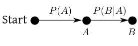
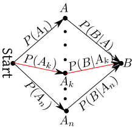
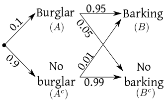
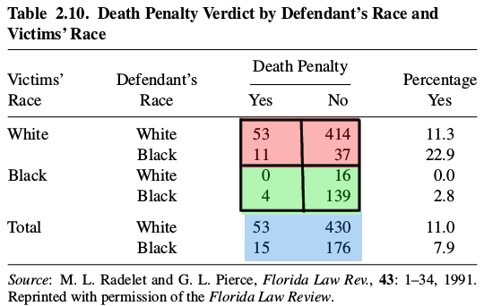
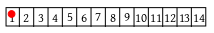
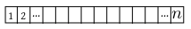

Probability that a coin toss would result in a head is a
statement more about our ignorance regarding the outcome than an
absolute property of the coin. If our ignorance level changes
(eg, if we get some new information) the probability may
change. We deal with this mathematically using the concept of
conditional probability.
EXAMPLE 1:
Here is a box full of shapes.
A box of shapes
I pick one at random. What is the probability that it is a triangle?
The answer is $P(\mbox{triangle})=\frac{5}{12}.$
Now, someone gives me some extra information: the randomly
selected shape happens to be green in colour. What is the
probability of its being triangle in light of this extra information?
Now my sample space is narrowed down to only the green shapes.
Narrowed sample space
Here the probability of triangle is different $\frac 27.$
We cannot use the same notation $P(\mbox{triangle})$ for
this new quantity. We need a new notation that reflects our extra
information. The new notation
is $P(\mbox{triangle}|\mbox{green}).$ We call it the
conditional probability of the selected shape being a triangle
given that it is green.
■
In general, the notation is $P(A|B)$ where $A,B$ are
any two events. The mathematical definition is just as it should
be. Instead of the entire sample space $\Omega$ you now narrow
you focus down to only $B.$ So $A$ is now narrowed down
to $A\cap B.$ So $P(A|B)$ actually measures
the $P(A\cap B)$ relative to $P(B).$ Hence the
definition is:
Proof:
We have to check that the three axioms are satisfied by $P'.$
Clearly, $P'(A) = \frac{P(A\cap B)}{P(B)}\geq 0.$
Also if $\Omega$ denotes the sample space,
then $P'(\Omega) = \frac{P(\Omega\cap B)}{P(B)} = \frac{P(B)}{P(B)}=1.$
For the third axiom, let $A_1,A_2,...$ be countably many disjoint events. Then
$$
P'(A_1\cup A_2\cup\cdots) = \frac{P((A_1\cup A_2\cup\cdots)\cap B)}{P(B)} =
\frac{P((A_1\cap B)\cup(A_2\cap B)\cdots)}{P(B)} = \frac{\sum P(A_i\cap
B)}{P(B)}=\sum \frac{P(A_i\cap B)}{P(B)}=\sum P(A_i|B) = \sum P'(A_i).
$$
[QED]
::
EXERCISE 1: Show that if $P(A|B)=P(A)$ then $A,B$ must be independent. Is the converse true?
Be careful with the second part!
EXERCISE 2:
Show that if $P(A)>0$ then $P(A\cap B) = P(A)P(B|A).$
This result is just a minor rearrangement of the definition. But
it has an intuitive interpretation. $A\cap B$ means
both $A$ and $B$ has happened. We are finding its
probability in two steps: first the probability that $A$
has happened, $P(A).$ Then, $P(B|A),$ the conditional
probability that $B$ has happened given that $A$ has
happened. This is often represented diagrammatically:

This form is particularly useful when $A,B$ are events such
that $A$ indeed occurs before $B$ in the real
world. Here is an example.
EXAMPLE 2:
A box contains 5 red and 3 green balls. One ball is drawn at
random, its colour is noted, and is replaced back. Then one more
ball of the same colour is added. Then a second ball is
drawn. What is the probability that both the balls are green?
SOLUTION:
Notice that randomness enters in two stages, since there are
two random selections involved. Let $A$ be the event that
the first ball is green, and $B$ be the event that the
second ball is green.
We are to find $P(A\cap B) = P(A)P(B|A).$
What is the probability that the first ball is green? The answer
is $P(A) = \frac 38.$ Before drawing the second ball, the
composition of the box has changed depending on the outcome of the
first stage. This is where conditional probability helps. Given
that the first ball was green, we know the composition of the box
before the second drawing: 5 red and $3+1=4$ green. So $P(B|A) = \frac 49.$
The final answer therefore is $\frac 38\times\frac 49 = \frac 16.$
It is instructive to check this by simulation.
Sometimes an event can occur via different paths. To find the probability of such an event
we need to add the probabilitis of all the paths. This leads to the theorem of total probability.
Proof:
The following diagram illustrates the situation.
Theorem of total probability
We need to add the probabilities from all the paths from Start to $B.$
The probability of a path is computed by multiplying the
probabilities along each of the arrows along it.
Now let's write down the formal proof.
Since $A_1\cup\cdots\cup A_n=\Omega,$
hence $ B = B\cap \Omega = (B\cap A_1)\cup\cdots\cup (B\cap A_n).$
Also, since $A_i$'s are disjoint, hence $B\cap A_i$'s
are disjoint as well.
So
$P(B) = \sum_1^n P(B\cap A_i) = \sum_1^n P(A_i) P(B| A_i),$
as required.
[QED]
Suppose that $\phi\neq A\subseteq B$ are finite sets. You have a list of all elements of $B.$ But
you do not have a list of all elements of $A.$ However, given any element of $B$ you can check if it is in $A$
or not. In this case how can you draw one element randomly from $A?$
One way is to use rejection sampling. In this technique you draw one element of $B$ randomly. If it is in $A$,
then stop and output that element. Else, you again draw a random element from $B$ (with replacement), and
continue like this.
This procedure is bound to terminate after a finite number of steps. The output will be a random sample from $A.$
::
EXERCISE 3: How to choose between 5 friends with equal probability using only a fair die? The following R code
will give a hint.
Multi-stage random experiments are all around us. Many processes
in nature occur step by step, and each step involves some
randomness. Often the last layer of randomness is due to the
measurement error. Bayes' theorem is a way to "remove" this last
layer to look deeper.
The theorem of total probability lets us move forward along the arrows, while Bayes' theorem
lets us move backwards.
Proof:
First think of the formula in terms of the following diagram. The
denominator is the probability of reaching $B$ from
Start. The numerator is the probability of only the red path.
The proof is very simple:
$$P(A|B) = \frac{P(A\cap B)}{P(B)} =
\frac{P(A)P(B|A)}{P(B)} = \frac{P(A)P(B|A)}{P(A)P(B|A)+P(A^c)P(B|A^c)}, $$
as required.
[QED]
[Thanks to Avigyan for pointing out a typo.]
::
EXERCISE 4: Look at the following diagram and write down the proof.

More general form of Bayes' theorem
The main idea behind Bayes' theorem goes beyond these two
versions. Whenever, you can draw an arrow diagram connecting
events, and know all the labelling probabilities, you can apply
Bayes' theorem.
EXAMPLE 3:
I live in a locality where burglary is uncommon. The chance that a burglar
breaks into my house is 0.1. I have a dog that is highly likely to bark
(say, with 0.95 probability) if a burglar enters. However, otherwise my
dog is a quiet one. If there is no burglar around, he barks with
probability only 0.01. I hear my dog
bark. What is the chance that a burglar has entered?
SOLUTION:
Let $A=$ {burglar has entered } and $B=$ {dog barks}.
We are given that
$$P(A)=0.1, ~~ P(B|A)=0.95,~~ P(B|A^c)=0.01.$$
So we get the following diagram.

We want to find $P(A|B).$ To apply Bayes theorem we need to find
$P(B).$
$$\begin{eqnarray*}
P(B)&=&P(A)\cdot P(B|A)+P(A^c)\cdot P(B|A^c) \\
&=& 0.1 \times 0.95 + (1-0.1) \times 0.01 \\
&=& 0.104
\end{eqnarray*}$$
Now apply Bayes theorem to get
$$P(A|B)=\frac{0.1 \times 0.95}{0.104}=0.913.$$
Diagrammatically,
you can think like this. To find $P(B)$, we
consider all paths from start to $B$. Multiply the probabilities along each
path and add. Thus $P(B)=0.1 \times 0.95 + 0.9 \times 0.01=\cdots$
Similarly to find $(A\cap B)$ add the probabilities of all the paths
from start to B through $A.$
Here $P(A \cap B)=0.1 \times 0.95.$
So now you can find $P(A|B)=\frac{P(A \cap B)}{P(B)}.$
■
This is an example of a two stage random experiment. The first stage is
whether a burglar enters or not. The second stage is whether the dog
barks or not.
As in the above example, a typical problem starts by telling you
unconditional probability of the first stage, and the conditional
probability of the second stage given the first. Only the
outcome of the second stage is observed, and the problem is to find the
conditional probability of the first stage given the outcome of the second
stage.
The same approach is applicable to any similar multistage experiment.
An urn model is a multistage random experiment. It consists of one or more boxes (called urns),
each containing coloured balls (balls are all distinct, even
balls having the same colour). Balls are drawn at random (using
SRSWR or SRSWOR) and depending on the outcome, some balls are
added/removed/transferred. Then again a few balls are drawn, and
so on. Here is one example.
EXAMPLE 4:
An urn contains 3 red and 3 green balls. One ball is drawn at
random, its colour noted, and returned to the urn. Then another
ball of the same colour is added to the urn. Then the same
process is repeated again and again. The possibilities grow like
this:
Typical questions of interest here are:
What is the probability that at the $10$-th stage we
shall have 12 red and 4 green balls?
What is the probability that the ball drawn at
stage $n$ is red?
Given that we have exactly 6 red balls at the 9-th stage, what is
the (conditional) probability that we had exactly 4 red balls at
the 6-th stage?
■
All such questions may be answered by using the theorem of total
probability and Bayes' theorem. By the way, one of the above
three questions may be answered immediately.
Which one? What is the answer?
The second one. The answer is $\frac 12$ by symmetry argument.
The above urn model is an example of the Polya Urn Model, where in general we
start with $a$ red and $b$ green balls, and at each
stage a random ball is selected, replaced and $c$ more
ball(s) of its colour is(are) added.
You may see this link for further discussion.
Some real life scenarios can be mathematically treated as urn models.
We shall discuss two such examples.
EXAMPLE 5:
Most people form their opinions based on random personal
experience, instead of a carefully planned overall survey of a
situation. Polya's urn model is a simple version of this, as the following story shows.
An American lady comes to India. She has heard about the
unheigenic condition prevaling here, and is apprehensive about
flu. Well, as luck would have it, on her way from the airport
she meets a man suffering from flu. "Oh my," she shudders, "so
the rumour about flu is not unfounded, it seems!". The very next
day her city tour is cancelled, because the guide is down with
flu. "What a terrible country this is!", the lady starts to worry, "It is full of
flu!" So imagine her panic when on the
third day she learns that a waiter in the hotel has caught the
disease.
Now here is the story of another American visitor to our
country. He is also apprehensive of flu. But on the first day
he does not meet any flu-case. "May be this fear of flu in India
is a rumour after all," he thinks with some relief at the end of
the day. The next day passes, and still he does not meet a single
person with flu. He is now quite confident that the apprehension
about flu is not serious. When yet another day further supports
his optimistic belief, he starts thinking that the expensive
flu-vaccine he took back home was a wastage of money.
Which of these two view points is reasonable? Neither. They both
formed their own ideas based on their personal random
experience. The true prevalence of flu in India is the same for both of them,
but their personal beliefs about it are drastically different.
Polya's urn model captures this idea. A red ball means fear of flu,
a green ball means the opposite. Initially they were equal in
number. The lady met a flu case on day 1 (i.e., randonly selected
a red ball), and her fear deepened (one more red ball added). The
man did not meet any flu case in day 1 (green ball selected), so
his courage increased (one more green ball added). Yet, what is
the chance of selecting a red ball at stage 1? It is
still $\frac 12$ same as stage 0 (ie, the true prevalence rate of
flu has not changed from stage 0).
This model also demonstates a common phenomenon: once you
randomly select balls of a certain colour in the first few stages, the
(conditional) probability of selecting more balls of that colour
increases. Indeed, people who has met more good people in their
childhood tend to see more good people around them. Similarly,
people who has met more bad people during their childhood are more likely to find faults with
everybody.
However, one must understand that the real situation is far too
complex to be captured adequately by Polya's urn model.
■
Here is another real life situation captured by urn models.
EXAMPLE 6:
In the Ehrenfest model of heat exchange physicists
consider two connected containers with $k$ particles distributed
between them. At each step a particle is chosen at random and
transferred to the other container. The question is: What is the
distribution of particles at the $n$-th stage. This may be
thought of as follows: one urn contains $k$ balls some of
which are red and the rest green. A ball is drawn at random,
removed, and another ball of the opposite colour is added. Here
red balls play the role of particles in the first container, and
green balls those in the other.
■
Parents of most prospective candidates for ISI admission wonder: "Does a particular coaching centre
increase the chance of
admission to the ISI?" Stated in terms of probabilities this is
a question involving $P(A|B)$ where $A$ is that a (randomly
selected) student gets admitted to ISI, and $B$ is that the
student went to that coaching centre.
Most parents go about guessing $P(A|B)$ as follows. They
would enquire from successful students from the previous years if
they had studied at that coaching centre or not. When they hear
that out of the 90% students came from that centre, they are
impressed about its performance.
Is this decision logically valid?
No, what the parents learned from their survey was
that $P(B|A)$ is large. This does not imply in any way
that $P(A|B)$ is large. They should have surveyed the
coaching goers and figured out the proportion that got
admitted. This proportion could have been (and most often is) microscopically low.
Suppose that $A_1,A_2$ and $B$ are three events such
that $P(A_1|B) < P(A_2|B)$ and also $P(A_1|B^c) <
P(A_2|B^c).$
Can you conclude from this that $P(A_1) < P(A_2)?$
(Think before clicking here.)
Yes, multiply the first inequality by $P(B)$ and the second
by $P(B^c)$ and add. The result now follows from the theorem
of total probability.
Now consider the following real life data set.

It is about number of death penalties given for murder cases. The
cases have been classified by three factors:
the race of the victim (i.e., the person murdered): white or black
the race of the defendant (i.e., the person accused): white or black
whether death penalty was given: yes or no.
The red and green parts give the actual
data, the remaining numbers are derived from them. For example
the 11.3 is obtained as $53/(53+414).$ The blue part is
obtained by adding the red and green parts. For example, $414+16=430.$
Now consider the cases where the victim is white (the red part
in the table). Notice that
for white defendants 11.3% got a death penalty, while for black
defendants the percentage is 22.9%. Thus if
$A_1$ denotes
the event "White defendant gets death penalty"
$A_2$ is the event that "Black defendant gets death penalty",
$B$
is the event that "the victim is white",
then we infer $P(A_1|B) < P(A_2|B).$
Again, focusing on the green part we get a similar observation
(0.0 < 2.8). So we infer $P(A_1|B^c) < P(A_2|B^c).$
So we combine these to conclude $P(A_1) < P(A_2).$ Thus, it seems that the
victim's race does not matter: a white defendant is
always less likely to get a death penalty.
So let's ignore the victim's race. This basically means adding
the red and green tables to get the blue table. Similar argument
based on this combined table, however, seems to indicate $P(A_1) >
P(A_2)$ since $11.0 > 7.9.$
What went wrong? This is called Simpson's paradox and
often crops up in practice.
(Think before clicking here.)
Here the sample space is the
set of all the $53+430+15+176$ cases involved. The
event $A_1$ is
"White defendant gets death penalty". It is the subset consisting
of all those cases where the defendant is white and death penalty
has been awarded. There are $53+0$ such
cases. Similarly $A_2$ has size $11+4.$
Now $P(A_1|B) = \frac{P(A_1\cap B)}{P(B)}.$
Here $|A_1\cap B|=53$ and $|A_2\cap B|=11.$
So our rash conclusion that $P(A_1|B) < P(A_2|B)$ was wrong.
The host of the program shows you three closed doors.
You know that a
random one of these hides a car (considered a prize), the remaining two doors hide goats
(considered valueless).
You are to guess which
door has the car. If you guess correctly, then you get
the car. Once you choose a door, the host opens some other door and
shows that there is a goat behind it. Now you are given an option
to switch to the other closed door. Should you switch? Remember
that the host knows the contents behind each door and will always
show you a door with a goat.
You can play this game online here.
Here are two ways to think about this, both natural but leading
to opposite conclusions:
Whether your original selection was right or wrong, there is
always at least another door hiding a goat. So the host will
always open that. There is no extra info in it. Thus, nothing
can be gained by switiching.
Earlier you had three doors and knew nothing about their
contents. Now you at least know the content behind one door. In
light of this extra information, switiching is justified.
The confusion remains even if you do some conditional probability
computations. Let's label the the door you chose originally by the number
1. Also let's label with the number 2 the door opened by the
host. The remaining door is labelled 3.
Here the sample space is $\{1,2,3\},$ the numbers denoting
the possible positions
of the car. The unconditional probabilities were $\frac 13$
each. The conditional probabilities are $\frac 12, 0, \frac 12.$
Does the confusion go away now? Unfortnately, no:
since $\frac 12 > \frac 13$ you should switch.
But the conditional probability of both doors 1 and 3
are $\frac 12.$ So nothing is to be gained by switching.
All the views are wrong! The true conditional probabilities are $\frac 13$
for not switching and $\frac 23$ for switching.
So you should switch.
You might like to simulate the situation using R. Allegedly, the
famous mathematician G Polya was not convinced about the correct
answer until he was shown a computer simulation!
car = sample(3,1000,rep=T)
host = c(3,2,3)
other = host[car]
sum(car==1)
sum(car==other)
Here is an explanation of the code. We shall play the game 1000
times. Each time we freshly randomize the position of the
car. This is done in the first line of the code. We need a
strategy for the host. Remember that the door you selected first is called door 1.
So the host's strategy is like a function that maps car's
true position to door to be kept closed. If the car is not behind door
1, then the host has only one choice. If the car is behind door
1, then the host can open either 2 or 3. Here, w.l.g., we are
keeping 3 closed. So the function is $host[1]=3, host[2]=3$
and $host[3]=2.$ In other words, the strategy is the
array $(3,2,3).$
EXERCISE 9: Modern digital communication relies on transmitting 0's and 1's from one
device to another. Suppose that device A transmits a 0 with
probability 0.4 and a 1 with probability 0.6. The communication channel is
noisy, so if a 1 is transmitted, it may get corrupted to a 0 in
5% of the cases. If a 0 is transmitted, it may be corrupted into a 1 in 1% cases. Given that
device B has received a 1, what is the chance that it is
uncorrupted?
EXERCISE 10: A doctor diagnoses a disease correctly in 90% cases. If the diagnosis is
wrong, the patient dies with probability 50%. Even for a correct diagnosis
the patient dies in 10% cases. Given that a patient has died find the
conditional probability that the diagnosis was correct.
Let $A=${the dice show difference numbers},
and $B=${at least one show a 6}.
Then $P(A) = \frac{6\times 5}{6\times 6}$ and $P(A\cap B) =
\frac{10}{6\times 6},$ because $A\cap B=${(1,6),...,(5,6)}\cup{(6,1),...,(6,5)}.
::
EXERCISE 12: If two fair dice are rolled, what is the conditional
probability that the first one shows 6 given that the sum
of the outcomes of the dice is $i?$ Compute for all possible
values
of $i.$
$0$ for $i=2,...,6.$ Then, for $i=7,...,12$
the conditional probability is $\frac{1}{13-i}.$
::
EXERCISE 13: Here is part of a Ludo board.

What is the probability that
the counter will arive at 10 in exactly two moves? Assume that
the die shows $i$ with probability $p_i$
for $i=1,...,6.$ Let $T_{15\times15}$ be a matrix
with $(i,j)$-th entry $p_{j-i}$
whenever $j-i\in\{1,...,6\}$ and 0 else. Show that the probability that the counter
arrives at 14 (starting from 1) in exactly 3 moves equals
the $(1,14)$-th entry of $T^3.$
$p_3p_6 + p_4p_5+p_5p_4+p_6p_3.$ [Thanks to Anant Raj for correcting a mistake here.]
::
EXERCISE 14: Let $A_{n\times n} = ((p_{ij}))$ be a matrix where
each $p_{ij}\geq 0$ and for each $i$ we have $\sum_j
p_{ij}=1.$ (Such a matrix is called a stochastic matrix.)
We have a ludo board with $n$ positions:

The matrix governs the random motion of a counter jumping back
and forth over this board in the following way:
If the
counter is at $i$ then it moves to $j$ with
probability $p_{ij}.$ (If $i=j,$ then the counter stays put.)
All moves are independent. Show that the
probability of the counter moving from $i$ to $j$ in
exactly $k$ moves is the $(i,j)$-th entry of the matrix $A^k.$
Use induction on $k$. Let $b_{ij}$ be the probability that we move from $i$
to $j$ in exactly $k-1$ steps. Then the theorem of total probability implies that the
probability of moving from $i$ to $j$ in exactly $k$ steps is
$$c_{j} = \sum_{r=1}^n b_{ir}a_{rj}.$$
In other words, if you construct the matrices $B$ and $C,$ you have
$$C = BA.$$
The basis of induction is for $k=1.$
By induction hypothesis $B = A^{k-1}.$ So the induction step is
$C = A^{k-1}A = A^k.$
::
EXERCISE 15:
We have $N+1$ urns, labelled $0,1,...,N.$ The urn with
label $k$ contains $k$ red and $N-k$ green
balls. One urn is selected at random, and an SRSWR of
size $n$ is drawn. All the $n$ balls are found to be
red. One more ball is drawn from the same urn. Find the
conditional probability that this ball is also red.
WOR: $P($ exactly 3 white$)=\frac{4\times4\times8\times7\times6}{12\times11\times10\times9}.$
$P($ exactly 3 white and 1st,3rd white$)=\frac{2\times4\times8\times7\times6}{12\times11\times10\times9}.$
So the required conditional probability is $\frac 12.$
WR: $P($ exactly 3 white$)=\frac{4\times4\times8^3}{12^4}.$
$P($ exactly 3 white and 1st,3rd white$)=\frac{2\times4\times8^3}{12^4}.$
So the required conditional probability is again $\frac 12.$
Model this as: toss a fair coin twice. Given that at least one is a head, what is the
conditional probability that the other is a tail?
Answer is $\frac 23/\frac 34=\frac 23.
$
$P($ exactly 2 white$)=\frac 13\times\frac 23\times\frac 34+\frac 13\times\frac 13\times\frac 14+
\frac 23\times\frac 23\times\frac 14=\frac{11}{36}$
$P($ exactly 2 white and white from $A$$)=\frac 13\times\frac 23\times\frac 34+\frac 13\times\frac 13\times\frac 14=\frac{7}{36}.$
So the required conditional probability is $\frac{7}{11}.$
$P($ 2nd and 3rd cards spades$)=\frac{13\times12}{52\times51}.$
$P($ All three spades$)=\frac{13\times12\times11}{52\times51\times50}.$
Hence the required probability is $\frac{11}{50}.$
Let $A=$ event that a randomly selected woman has ectopic pregnancy.
Let $B=$ she is a smoker.
Given $P(A|B) = 2P(A|B^c) =2b$, say, where $b>0.$ and $P(B) = 0.32.$
Use Bayes theorem to get
$$P(B|A) = \frac{0.32\times2b}{0.32\times2b+0.68\times b}. $$
Notice that $b>0$ cancels out.
Can be done directly by counting. Or stepwise using conditional probability. The event is
"Each of the fours hands has exactly one ace".
Direct counting:
Order the four aces: 4! ways
Order the non-aces: 48! ways.
Place the first ace among the first 12 non-aces: 13 ways.
Place the second ace among the next 12 non-aces: 13 ways.
Place the third ace among the next 12 non-aces: 13 ways.
Place the fourth ace among the last 12 non-aces: 13 ways.
Total number of ways: $4!\times48!\times 13^4.$
$|\Omega| = 52!.$ So the reqired probability is $\frac{4!\times48!\times 13^4}{52!}.$
Using conditional probability:
$P(E_1E_2E_3E_4) = P(E_1)P(E_2|E_1)P(E_3|E_1E_2)P(E_4|E_1E_2E_3).$
Now $P(E_1) = \frac{4\times (48\times 47\times\cdots\times(48-12+1)}{52\times\times 51\times\cdots\times (52-13+1)}.$
Now $P(E_2|E_1)$ is similar except that now we start with a deck of 39 cards among which exactly 3 are aces.
Similarly for the other two conditional probabilities. The last conditional probability is of course 1.
Let $B_i=$ the event that $i$-th draw gives black. Similarly for $W_i.$ Then
in (a) we want $P(B_1B_2W_3W_4)=P(B_1)P(B_2|B_1)P(W_3|B_1B_2)P(W_4|B_1B_2W_3).$
Here $P(B_1) = \frac{7}{5+7}.$ Also $P(B_2|B_1) = \frac{9}{5+9}$, $P(W_3|B_1B_2) = \frac{5}{5+11}$ and $P(W_4|B_1B_2W_3) = \frac{7}{7+11}.$
In (b) the black balls could occur in ${4 \choose 2} = 6$ ways among the 4 draws. The probability of each of these 6
cases is the same as that in (a). So the answer is 6 times that of (a).
(b) Focus only on the upper path in the diagram above: $\frac{ \frac{2}{6}\times\frac{2}{3} }{ \frac{2}{6}\times\frac{2}{3}+\frac{4}{6}\times\frac{1}{3} }$
Let $\Omega=$ all the ways the deck may be ordered. Then $|\Omega|=52!$ and we
assume that all these are equally likely.
Let $A=$ the event that the first 19 are non aces and the 20-th is an ace.
Let $B=$ the event that the 21-st is the ace of spades.
Let $C=$ the event that the 21-st is the two of clubs.
To find $P(B|A)=\frac{P(A\cap B)}{P(A)}$ and $P(C|A)=\frac{P(A\cap C)}{P(A)}.$
Here $|A|=4\times 48\times\cdots\times(48-19+1)\times 32!$,
$|A\cap B| = 1\times 3\times
48\times\cdots\times(48-19+1)\times31!$ and
$|A\cap C| = 1\times 4\times 47\times\cdots\times(47-19+1)\times31!.$
[Corrected mistakes pointed out by Roshan and Titas.]
This problem is not very clear. Interpret it like this. God picks up a random employee (from the totality
of all the 225 employees) and puts the idea of resignation into his/her head. Given that this employee is a woman, what
is the conditional probability that she works in store C.
0, of course! She has already resigned. So how can she work for store C now? (Just kidding!)
But if we want the conditional probability that she worked for store C, it is $\frac{100\times0.7}{50\times0.5+75\times0.6+100\times0.7}$.
Let $B = $ the event that the drawn card is an ace. Let $A = $ the event that the
interchanged card is selected.
Then $P(A) = \frac{1}{27}$. Also $P(B|A) = 1$ and$P(B|A^c) = \frac{1}{13}$.
Now apply the theorem of total probability.
Jailer's reasoning is incorrect. It is just the Monty Hall paradox. Here $P(A)$ remains
$\frac 13$. The other guy (after the jailor has eliminated the third) rises from $\frac 13$ to $\frac 23$.
In other words, we have a random experiment that can output $1,2,...,m$ with probabilities
$p_1,...,p_m.$ The experiment is run $n$ times. What is the chance that the last
outcome is different from all the earlier ones?
Let $A$ be this event. Let $B_i$ be the event that the last coupon is of type $i.$
Then $P(A) = \sum_{i=1}^m P(B_i)P(A|B_i).$
Now $P(B_i) = p_i.$ Also $A\cap B_i$ is the event that the $i$-th coupon does not show up among the first
$n-1$ draws, but shows up at the $n$-th draw. So $P(A\cap B_i) = (1-p_i)^{n-1} p_i.$
So $P(A|B_i) = \frac{P(A\cap B_i)}{P(B_i)} = (1-p_i)^{n-1}.$
Hence $P(A) = \sum_{i=1}^m p_i (1-p_i)^{n-1}.$
(a) The procedure may be modelled by this random experiment: toss the coin
twice, report "Head" if the outcome is HT, report "Tail" if the outcome is TH, and report
"Failure" otherwise. Then we are to show that the conditional probability that the outcome is
"Head" given that it is not "Failure" is $\frac 12.$
i.e.,
$$\begin{eqnarray*}& & P(Head|\mbox{not }Failure)\\
& = & \frac{P(Head \cap \mbox{not }Failure)}{P(\mbox{not }Failure}\\
& = & \frac{P(HT)}{P(HT)+P(TH)}\\
& = & \frac{p(1-p)}{p(1-p)+p(1-p)} = \frac 12,
\end{eqnarray*}$$
as required.
(b) The "simpler" procedure reports "Head" if the original outcome
is $TH, TTH, TTTH,...$
The probability is
$$(1-p)p + (1-p)^2p + (1-p)^3p+\cdots= (1-p)p \times \frac{1}{1-(1-p)} = 1-p,$$
which may not equal $\frac 12.$
You may either list all the paths and then compute the
probability of their union using inclusion-exclusion, or you may
you conditional probability. In the latter approach, you take
the switches one by one, and consider the cases when it is on and
when it is off. This approach is better for complicated circuits.
$A_i=$ {first throw shows $i$ } for $i=2,3,...,12.$
Let $p_i = P(A_i).$
Then $P(win)=\sum_i p_iP(win|A_i).$
It is easy to compute $p_i$'s. Also $P(win|A_7) = P(win|A_{11}) = 1$ and $P(win|A_i) = 0$ for $i=2,3,12.$
For any other $i$ we have $P(win|A_i) = p_i + (1-p_i-p_7)p_i + (1-p_i-p_7)^2p_i + \cdots = \frac{p_i}{p_i+p_7}.$
[Thanks to Rishit Garg for correcting a serious mistake here, which has now been corrected.]
Intuitive argument for the draw strategy: If you draw a red ball first, then the remaining balls in the urn have an equal
composition for either urn. So if you choose WOR, then the second ball gives no information. If you get black in the first
draw, then the second ball gives more information for WOR. So the best drawing strategy should be WR if the first ball is
red, and WOR otherwise.
If you are not convinced by this argument, you may proceed rigourously as follows. Here are
all possible second draw strategies:
always WR
always WOR
WR if first is R, WOR otherwise
WOR if first is R, WR otherwise.
Also the best urn guessing strategy is to go for the urn that maximises the conditional probability.
Now for each of the second draw strategies you need to compute probability of correct guess.
Let me show the computation for the first strategy "always WR". Here
$$P_1(\mbox{correct}) = \sum_X P_1(X)P_1(\mbox{correct}|X),$$
where the sum is over $X\in\{$ RR, RB, BR, BB$\}$. Here I am writing $P_1$ to mean
probability under strategy 1. $P_1(RR) = \frac 12\times \left[ \left(\frac 23\right)^2 + \left(\frac{101}{201}\right)^2 \right]$. Also we shall
guess urn A for outcome RR. So $P_1(\mbox{correct}|RR) = \frac{\left(\frac{2}{3}\right)^2}{ \left(\frac{2}{3}\right)^2 + \left(\frac{101}{201}\right)^2}$.
Proceed with the other terms similarly.
::
EXERCISE 50: Let $a,b,c\in{\mathbb N}.$ Suppose that we start with $a$ red and $b$ green
balls in an urn. We draw a ball at random, note its colour, replace it, and
add $c$ more balls of that color. We continue this process
again and again. What is the probability that at the $n$-th
stage the ball drawn will be red? Does the probability depend
on $n?$
Let $X_n$ be the colour of the $n$-th ball drawn. Then
$
\newcommand{\red}{\mathrm{red}}
\newcommand{\grn}{\mathrm{green}}
$
$$
P(X_n=\red) = P(X_1=\red)P(X_n=\red|X_1=\red) + P(X_1=\grn)P(X_n=\red|X_1=\grn).
$$
Now $P(X_1=\red) = \frac{a}{a+b}$ and $P(X_1=\grn) = \frac{b}{a+b}.$
Now observe that $P(X_n=\red|X_1=\red)$ is same as the
probability of getting a red ball at $(n-1)$-th draw
starting with the configuration $a+c$ red balls
plus $b$ green balls.
By induction hypothesis, this is $\frac{a+c}{a+b+c}.$
Similarly, $P(X_n=\red|X_1=\grn) = \frac{a}{a+b+c}.$
Now the result follows immediately.
::
EXERCISE 51: Same set up as in the last problem. Fix two natural
numbers $m < n.$ What is the probability that the ball
drawn at stage $m$ is green and the ball drawn at
stage $n$ is red? Does the answer depend on $m$ and $n$?